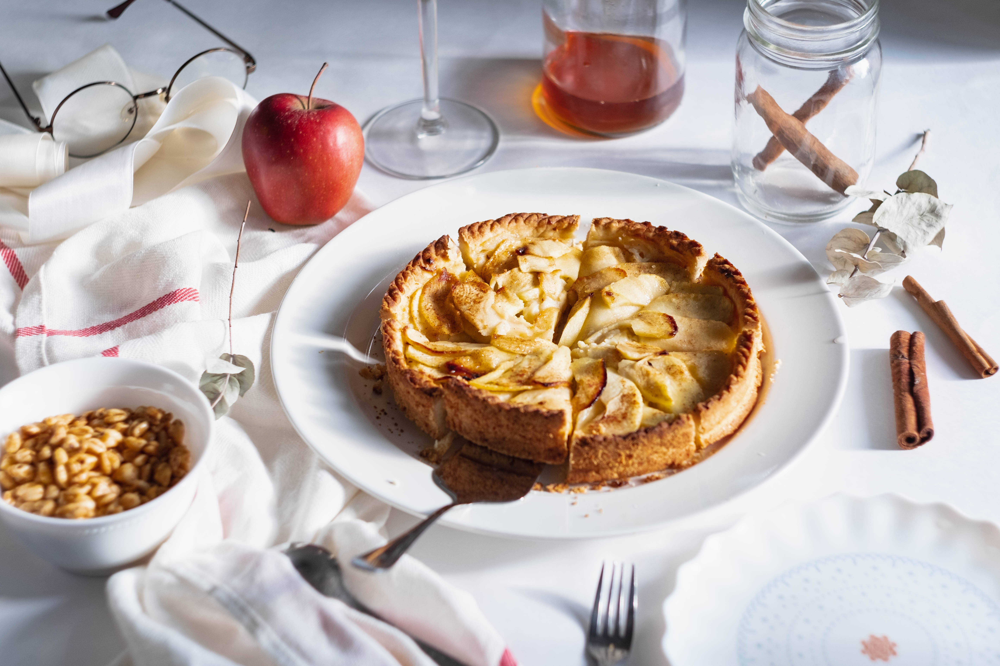

Muffins

Ingredienten
- 2 appelen
- 4 el suiker
- 125 g zelfrijzende bloem
- 3 el olie
- 200 ml slagroom
- 2 ei
- 2 zakjes vanillesuiker
- 3 el melk
- snuifje zout
- 2 el bloemsuiker
- 80 g boter
Bereiding
- Meng in een kom de bloem met de suiker, vanillesuiker, het ei, de melk en olie tot een glad deeg.
Vet een platte taartvorm van 24 cm diameter in met boter en bestuif met bloem.
Doe het deeg erin, strijk het een beetje open met een spatel want het lijkt misschien plakkerig, maar dit komt goed.
Het is de bedoeling dat het maar een heel dun laagje deeg is.
-
Schil de appelen, verwijder het klokhuis, snij in vieren en vervolgens in dunne plakjes. Schik de appelplakjes dakpansgewijs in een rondje op de taart.
- Smelt de boter in een pannetje met de suiker.
Neem van het vuur als de suiker en boter gesmolten zijn, let op dat de boter niet te heet is geworden.
-
Doe er het ei bij en roer tot een glad papje. Lepel dit over de taart en bak de taart gedurende 20 à 25 minuten. Lekker met een toef slagroom erbij.
-
Verwarm de oven voor op 200°C.